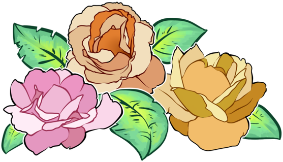

Dream Sequence
I wanted to make something that would confuse people but also scare them without actually showing anything. This was based off of a recent video game i played called Layers of Fear. In the game the area you were in would change suddenly and that's the parrt I wanted to recreate. I'm not the best actor and all my friends are in LA so I didn't have anyone to ask for help so I had the idea to make it into a first-person type of style. It made it a whole lot easier to edit as well.
StoryWithinaStory from Niles J on Vimeo